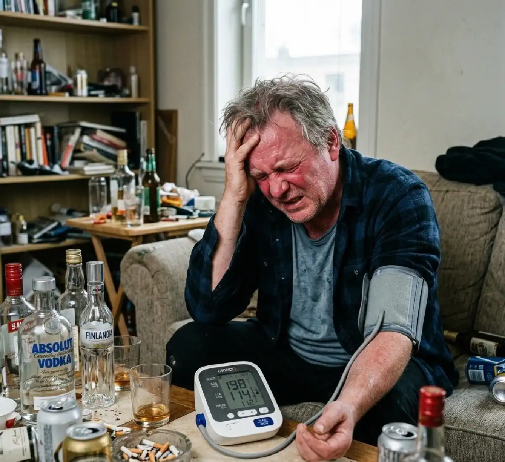

+38(068) 79 72 782
+38(068) 79 72 782Влияние алкоголя на давление
Каждая рюмка — нагрузка на сердце


Бесплатная консультация, работаем круглосуточно 24/7
Каждая рюмка — нагрузка на сердце
Алкоголь часто воспринимается как средство, способное «расширить сосуды» и временно снизить давление. Из-за этого у части людей формируется опасная привычка: «если поднялось давление — выпью немного, станет легче». На практике такой подход не лечит гипертонию и не защищает сердце. Спиртное влияет на сосудистый тонус и нервную систему волнообразно: кратковременное ощущение тепла и расслабления может быстро смениться спазмом сосудов, учащением пульса и ростом артериального давления. У людей с уже диагностированной гипертонией это особенно рискованно — колебания давления становятся более выраженными и могут привести к гипертоническому кризу. Важно понимать, что даже «небольшие дозы» алкоголя запускают сложные биохимические процессы: активируется симпатическая нервная система, повышается уровень стрессовых гормонов, усиливается нагрузка на миокард. В результате сердце начинает работать интенсивнее, возрастает потребность в кислороде, а сосуды теряют способность адекватно реагировать на изменения нагрузки. Такие перепады могут сопровождаться головной болью, покраснением лица, ощущением пульсации в висках, тревожностью и нарушением сна.
Регулярное употребление алкоголя нарушает работу сердечно-сосудистой системы, повышает нагрузку на сердце и увеличивает риск осложнений: аритмий, гипертонических кризов, инсульта и инфаркта. Со временем формируется устойчивая гипертензия, снижается эластичность сосудистой стенки, ухудшается состояние почек — а именно почки играют ключевую роль в регуляции давления. Особенно опасно, когда человек сочетает спиртное с недосыпом, стрессом, солёной пищей и нерегулярным приёмом препаратов от давления — именно так чаще всего и происходит в реальной жизни. Отдельную проблему представляет отмена алкоголя после длительного употребления. В период абстиненции давление может резко повышаться, появляться тахикардия, дрожь, тревога, скачки показателей до критических цифр. В таких ситуациях важно не заниматься самолечением и не «гасить» симптомы новой дозой спиртного, а обратиться за медицинской помощью для безопасной стабилизации состояния.
Гипертония — это хроническое заболевание, требующее системного подхода: контроля давления, коррекции образа жизни, регулярного приёма назначенных препаратов и наблюдения врача. Алкоголь не является методом лечения и не может заменить терапию. Напротив, отказ от спиртного или его максимальное ограничение — один из шагов к снижению рисков и сохранению здоровья сердца и сосудов.
После употребления алкоголя сосуды действительно могут временно расширяться — из-за этого у некоторых людей давление на короткое время снижается, появляется ощущение расслабления и тепла. Однако этот эффект непродолжителен. Организм быстро включает компенсаторные механизмы, стремясь восстановить баланс: активируется симпатическая нервная система (реакция «стресса»);
Фактически происходит «качеля»: кратковременное снижение сменяется подъёмом показателей, иногда выше исходного уровня. У одних людей скачок давления возникает уже через несколько часов после приёма алкоголя, у других — на следующий день. Особенно характерны такие эпизоды в период так называемого «выхода» после употребления: появляются тревожность, тахикардия, потливость, головная боль, раздражительность, плохой сон и нестабильные цифры артериального давления. Дополнительно алкоголь нарушает водно-электролитный баланс, может способствовать обезвоживанию и повышению вязкости крови, что ещё больше увеличивает нагрузку на сердечно-сосудистую систему. Если человек принимает препараты от давления нерегулярно или пропускает дозы во время употребления спиртного, риски возрастают.
Для пациентов с гипертонией такие колебания особенно опасны: резкие перепады давления повышают вероятность нарушений сердечного ритма, ухудшения кровоснабжения мозга и сердечной мышцы, а в тяжёлых случаях — развития гипертонического криза. Именно поэтому алкоголь не может рассматриваться как способ «саморегуляции» давления и требует осторожности, а при наличии сердечно-сосудистых заболеваний — максимального ограничения или отказа.
Миф держится на двух вещах:
Важно понимать: гипертония — хроническое заболевание, требующее системного и предсказуемого контроля. Основой терапии являются регулярный приём назначенных препаратов, коррекция образа жизни, контроль веса, ограничение соли и наблюдение врача. Алкоголь, напротив, делает давление менее стабильным, усиливает суточные колебания показателей и может снижать эффективность гипотензивных средств. Когда человек пытается «регулировать» давление спиртным, он фактически теряет контроль над заболеванием. В краткосрочной перспективе это может проявляться скачками давления и ухудшением самочувствия, а в долгосрочной — увеличением риска сердечно-сосудистых осложнений. Стабильность и последовательность в лечении всегда безопаснее, чем попытки временного облегчения.
Этанол воздействует на сердечно-сосудистую систему комплексно и многоуровнево:
Кроме того, алкоголь усиливает активность стрессовых гормонов, повышает нагрузку на миокард и может провоцировать эпизоды так называемого «сердца выходного дня» — появление аритмии после даже разового приёма спиртного. У людей с уже существующей гипертонией такие реакции протекают более выраженно и тяжелее переносятся. Даже эпизодическое употребление способно вызывать клинически значимые изменения: скачки давления, тахикардию, ощущение перебоев в работе сердца, головную боль и слабость. При регулярном употреблении риски накапливаются — формируются стойкие нарушения ритма, ухудшается сократительная функция сердца, повышается вероятность сосудистых осложнений.
Важно учитывать и косвенное влияние: алкоголь нередко сопровождается недосыпом, нарушением режима питания, увеличением потребления соли, пропуском приёма лекарств. В совокупности это делает течение гипертонии менее контролируемым и повышает вероятность обострений. Стабильность терапии и отказ от факторов, провоцирующих колебания давления, остаются ключевыми условиями профилактики осложнений.
Скачок давления после спиртного чаще всего связан сразу с несколькими факторами, которые накладываются друг на друга и усиливают общий эффект:
Алкоголь усиливает мочеотделение, что приводит к потере жидкости и микроэлементов. На этом фоне кровь становится более вязкой, а сердцу приходится работать интенсивнее. Одновременно активируется симпатическая нервная система — организм переходит в режим стресса, даже если человек субъективно ощущает расслабление. У людей с гипертонией это может проявляться головной болью, шумом в ушах, ощущением давления в затылке, слабостью, тревожностью, сердцебиением, «мурашками», дрожью, тошнотой. Иногда появляются покраснение лица, чувство жара или, наоборот, озноб. Давление может быть нестабильным: показатели колеблются в течение нескольких часов или даже суток.
Особенно важно учитывать, что подобные состояния часто возникают на следующий день после употребления — в период абстинентной реакции. Именно в это время риск гипертонического криза повышается. Поэтому попытки «выровнять» давление новой дозой алкоголя только усиливают нагрузку на сердечно-сосудистую систему и делают ситуацию более непредсказуемой. При повторяющихся эпизодах скачков давления после спиртного стоит рассматривать это как сигнал организма о неблагоприятной реакции и повод пересмотреть отношение к алкоголю, особенно при наличии диагностированной гипертонии.
С практической точки зрения у гипертоников нет по-настоящему безопасной дозы алкоголя, потому что реакция организма всегда индивидуальна и зависит от целого ряда факторов:
Даже одинаковое количество спиртного у разных людей может вызывать совершенно разные реакции: от умеренного подъёма давления до выраженной тахикардии и значительных скачков показателей. Кроме того, при сочетании с гипотензивными средствами алкоголь может либо ослаблять их действие, либо усиливать побочные эффекты — например, вызывать резкую слабость, головокружение или падение давления с последующим «рикошетным» подъёмом. Важно учитывать и накопительный эффект: при регулярном употреблении сосудистая стенка теряет эластичность, ухудшается регуляция тонуса, повышается нагрузка на миокард. Это делает течение гипертонии менее предсказуемым и усложняет достижение стабильных целевых показателей.
Если гипертония уже диагностирована, наиболее безопасная стратегия — максимальное ограничение или полный отказ от алкоголя и регулярный контроль артериального давления. Это особенно важно при нестабильных цифрах, перенесённых гипертонических кризах, наличии аритмий или признаков поражения органов-мишеней. Стабильность режима, соблюдение рекомендаций врача и внимательное отношение к самочувствию значительно снижают риск осложнений и помогают сохранить качество жизни.
Алкоголь способен изменять действие антигипертензивных препаратов и усиливать их побочные эффекты. Это связано как с прямым влиянием этанола на сосудистый тонус и нервную систему, так и с изменением обмена лекарственных средств в печени. В результате терапия, которая в обычных условиях работает стабильно и предсказуемо, может становиться нестабильной и давать неожиданные реакции.
На фоне сочетания алкоголя и препаратов возможны резкое падение давления с выраженным головокружением и слабостью, ощущение «ватных» ног, потемнение в глазах, шаткость походки. Может появляться нарушение координации, сонливость, снижение концентрации внимания, что особенно опасно при вождении автомобиля или работе, требующей точности. У некоторых пациентов эффект лечения становится «скачкообразным»: давление то снижается слишком сильно, то, наоборот, остаётся повышенным, несмотря на приём привычной дозы лекарств.
Дополнительную проблему создаёт нагрузка на печень — именно она отвечает за метаболизм большинства препаратов. Алкоголь может замедлять или, наоборот, ускорять их переработку, изменяя концентрацию действующего вещества в крови. Это делает результат лечения менее контролируемым и может повышать риск токсических реакций или недостаточной эффективности терапии.
Ещё одна распространённая ситуация — нарушение режима лечения. После употребления спиртного человек чаще пропускает приём таблеток, принимает их несвоевременно или дублирует дозу «для усиления эффекта». Иногда препараты запиваются алкоголем, что дополнительно изменяет их действие. Всё это усиливает колебания давления и повышает вероятность побочных реакций. Таким образом, сочетание алкоголя и антигипертензивной терапии делает контроль гипертонии менее стабильным и увеличивает риск осложнений со стороны сердца, сосудов и нервной системы. Для сохранения предсказуемости лечения важно соблюдать режим приёма препаратов и по возможности исключать факторы, которые могут вмешиваться в их действие.
Риск осложнений значительно возрастает при длительно существующей гипертонии, когда сосудистая стенка уже подверглась изменениям и хуже адаптируется к перепадам давления. Дополнительную угрозу создают заболевания сердца, ишемическая болезнь, перенесённые инфаркты и различные формы аритмий — в таких случаях алкоголь может провоцировать сбои ритма и усиливать нагрузку на миокард.
Повышенные риски отмечаются и при лишнем весе, поскольку избыточная масса тела сама по себе усиливает нагрузку на сердечно-сосудистую систему и способствует нестабильности давления. При сахарном диабете страдают сосуды и обменные процессы, что делает организм более чувствительным к колебаниям давления и интоксикации. Регулярные запои создают хроническую токсическую нагрузку, нарушают регуляцию сосудистого тонуса и повышают вероятность кризов. В пожилом возрасте компенсаторные механизмы работают слабее, а сопутствующие заболевания встречаются чаще, поэтому даже умеренные колебания давления переносятся тяжелее. В этих ситуациях даже эпизодическое употребление алкоголя может привести к заметному ухудшению самочувствия, скачкам давления, усилению одышки, перебоям в работе сердца и повышению риска серьёзных сердечно-сосудистых осложнений.
Обратиться за медицинской помощью важно, если после употребления спиртного появляются выраженные и нарастающие симптомы ухудшения самочувствия. Алкоголь может провоцировать нестабильность давления и перегрузку сердечно-сосудистой системы, особенно у людей с уже диагностированной гипертонией или заболеваниями сердца. Если состояние не улучшается в течение короткого времени или, наоборот, прогрессирует, это повод не ждать, а проконсультироваться со специалистом.
К тревожным признакам относятся интенсивная головная боль с ощущением «распирания» или пульсации в висках и затылке, боли или чувство сдавления в груди, нехватка воздуха, учащённое сердцебиение. Настораживают выраженная слабость, дрожь, холодный пот, ощущение внутренней паники или сильной тревоги. Опасными сигналами также являются потемнение в глазах, шаткость походки, предобморочное состояние, спутанность сознания, онемение конечностей или перебои в работе сердца.
Особое внимание следует обратить на ситуацию, когда показатели давления значительно превышают ваши обычные цифры и не снижаются в покое или после приёма назначенных врачом препаратов. Если давление сопровождается ухудшением общего состояния, риски осложнений возрастают. Подобные проявления могут указывать на развитие гипертонического криза или других острых сердечно-сосудистых состояний. В такой ситуации важно не откладывать обращение к врачу. Медицинский контроль позволяет объективно оценить тяжесть состояния, исключить опасные осложнения, скорректировать терапию и безопасно стабилизировать давление и пульс. Своевременная помощь значительно снижает вероятность серьёзных последствий и помогает быстрее восстановить самочувствие.
В лёгких случаях действительно могут помочь отдых, полноценный сон, достаточный питьевой режим, спокойная обстановка и регулярный контроль артериального давления. Иногда организму достаточно времени, чтобы самостоятельно восстановить баланс. Однако если самочувствие остаётся плохим, давление нестабильно и «скачет», появляется тахикардия, выраженная тревожность или состояние возникло после запоя, полагаться только на домашние меры может быть небезопасно.
В таких ситуациях медицинская помощь позволяет комплексно воздействовать на причину ухудшения состояния. Инфузионная терапия под контролем врача помогает снизить токсическую нагрузку на организм, восстановить водно-электролитный баланс, стабилизировать показатели давления и пульса. Дополнительно уменьшается тревожность, нормализуется сон и снижается общее напряжение нервной системы. Наблюдение специалиста важно для своевременной коррекции терапии и предупреждения осложнений со стороны сердца и центральной нервной системы. Комплексный подход особенно актуален для людей с гипертонией и сердечно-сосудистыми заболеваниями, поскольку у них риск неблагоприятных последствий после употребления алкоголя значительно выше.
Самостоятельный приём препаратов «наугад» — частая причина ошибок и осложнений, особенно если повышение давления произошло после употребления алкоголя. В состоянии тревожности или плохого самочувствия человек нередко действует импульсивно, не учитывая особенности своего заболевания и совместимость лекарств. Опасность в том, что человек может:
Особенно рискованно самостоятельно комбинировать несколько гипотензивных средств или использовать препараты, которые ранее не назначались врачом. На фоне алкогольной интоксикации реакция организма может быть непредсказуемой: давление сначала снижается, затем «рикошетом» повышается снова. Если после алкоголя давление остаётся высоким и присутствуют выраженные симптомы — сильная головная боль, боль или сдавливание в груди, одышка, перебои в работе сердца, выраженная тревожность, слабость, — правильнее обратиться к врачу. Специалист оценит состояние, исключит признаки гипертонического криза или других осложнений и подберёт безопасную тактику стабилизации.
Ориентироваться нужно не только на цифры тонометра, но и на общее самочувствие. Даже умеренное повышение давления может быть опасным, если сопровождается выраженными симптомами. Помощь врача особенно важна, если:
Отдельно стоит подчеркнуть: если повышение давления произошло после употребления алкоголя, не стоит откладывать обращение за медицинской помощью. Неконтролируемая гипертония на фоне интоксикации или в период «выхода» может значительно повышать риск инсульта или инфаркта. В таких ситуациях важно не пытаться стабилизировать состояние повторной дозой спиртного, а получить профессиональную консультацию. При необходимости врач может оценить степень интоксикации, провести детоксикацию, скорректировать терапию или помочь безопасно выйти из запойного состояния. Комплексная оценка позволяет снизить нагрузку на сердечно-сосудистую систему и предотвратить тяжёлые осложнения. Получить помощь нарколога, терапевта и кардиолога можно в наркологии UmbrellaPlus в городах: (Киев | Харьков | Одесса | Днепр | Львов | Запорожье | Черкассы) Своевременная медицинская помощь позволяет исключить опасные осложнения, стабилизировать показатели давления и вернуть контроль над состоянием.
Основная профилактика — контроль употребления алкоголя или полный отказ от него. Если эпизоды повышения давления связаны со спиртным, важно не только стабилизировать текущее состояние, но и устранить сам провоцирующий фактор. В таких ситуациях совместная работа нарколога и терапевта помогает выстроить безопасную стратегию: оценить риски, скорректировать образ жизни и при необходимости провести детоксикацию и медикаментозную поддержку. Дополнительно важно:
Если скачки давления сопровождаются тахикардией, тревожностью, нарушением сна или возникают на фоне отмены алкоголя, требуется медицинская оценка состояния. Важно не пытаться «стабилизировать» самочувствие повторным приёмом спиртного — это лишь усиливает нагрузку на сердце и сосуды. Комплексный подход позволяет не только снизить частоту эпизодов повышения давления, но и уменьшить риск гипертонических кризов, аритмий и других сердечно-сосудистых осложнений. Своевременная консультация специалиста помогает вернуть контроль над состоянием и сделать лечение гипертонии более предсказуемым и безопасным.
Телефон для консультации доктора: +38(050-021-69-57)
Да, мы строго соблюдаем полную конфиденциальность на всех этапах лечения. Информация о пациенте, диагнозе и прохождении терапии не передаётся третьим лицам. Обращение к нам не влечёт постановку на учёт. Вы можете быть уверены в безопасности и анонимности.
Программа лечения разрабатывается индивидуально после консультации со специалистом. Учитываются вид зависимости, её длительность, физическое и психологическое состояние пациента. Такой подход позволяет повысить эффективность терапии и снизить риск срыва. Мы не используем шаблонные решения.
Да, мы сопровождаем пациентов и после основного курса лечения. Проводятся консультации, рекомендации по адаптации и профилактике рецидивов. При необходимости возможна дальнейшая психологическая поддержка. Это помогает сохранить результат и вернуться к полноценной жизни.
Номер телефона:
+380 (68) 797 27 82
+380 (50) 021 69 57
Адрес наркологического центра вашего города уточняйте по
телефону
Работаем в: Киеве, Одессе, Львове, Харькове, Днепре,
Запорожье, Черкассах, Чугуеве, Черноморске, Каменском
Telegram: t.me/umbrellaplus
График работы: Круглосуточно